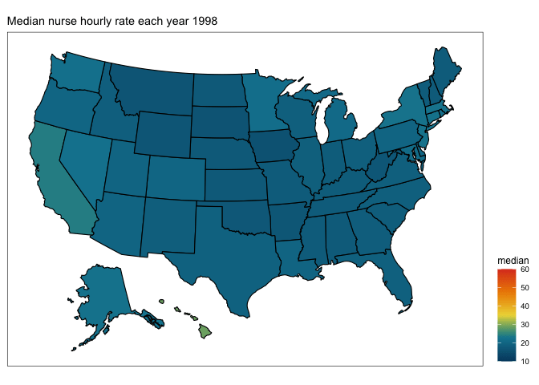

making maps with R
By Jen Richmond
October 13, 2021
For code club this week we were working with the Tidy Tuesday data about registered nurses in the US. When you have data about numbers of nurses employed and median wages by state over time, the obvious thing to do is make a map! Something I haven’t done in R before, so thought it might be useful to document my process.
first google
When I am trying something completely new in R, I generally google “how to do X in R blog”. Rather than looking for packages or documentation, I look for “walk through” style blog posts, preferably written by other beginners, or people I know to be really good R teachers. This time my search pulled up
this post by Little Miss Data aka
Laura Ellis. I “know” Laura from #rstats twitter and her blog is awesome, so seemed like a good place to start.
That post turned out to be about the ggmap package, which if you are looking to plot things on a city map might be useful. Not so good for plotting a US map though. Laura’s blog has a search function (I need to upgrade my blog so I can search it) though and when I searched the blog for “map”, it turns out that she has
lots of map-related posts, including
this one about easy US maps.
The post uses the usmap package, which is pretty easy to work with.
Here goes…
load packages
library(tidytuesdayR) # to get tidytuesday data
library(tidyverse) # for ggplot
library(usmap) # to get maps
library(janitor) # for clean_names
library(ggeasy) # making ggplot customisation easy
library(gganimate) # for animating map by year
library(transformr) # i think i need this for gganimate
library(patchwork) # to patch plots together
read data
The tidytuesdayR package makes it super easy to read data straight from github. We are working with the registered nurses data from Oct 5th. Here I am using double brackets to pull out the dataframe from the list, and clean_names() to make all of the variable names lower case with underscores in the gaps.
tt <- tt_load("2021-10-05")
##
## Downloading file 1 of 1: `nurses.csv`
nurses <- tt[[1]]
nurses <- clean_names(nurses)
make it smaller
Using the glimpse() function, I can see that there are 22 variables in this dataset.
glimpse(nurses)
## Rows: 1,242
## Columns: 22
## $ state <chr> "Alabama", "Alaska", "Ari…
## $ year <dbl> 2020, 2020, 2020, 2020, 2…
## $ total_employed_rn <dbl> 48850, 6240, 55520, 25300…
## $ employed_standard_error_percent <dbl> 2.9, 13.0, 3.7, 4.2, 2.0,…
## $ hourly_wage_avg <dbl> 28.96, 45.81, 38.64, 30.6…
## $ hourly_wage_median <dbl> 28.19, 45.23, 37.98, 29.9…
## $ annual_salary_avg <dbl> 60230, 95270, 80380, 6364…
## $ annual_salary_median <dbl> 58630, 94070, 79010, 6233…
## $ wage_salary_standard_error_percent <dbl> 0.8, 1.4, 0.9, 1.4, 1.0, …
## $ hourly_10th_percentile <dbl> 20.75, 31.50, 27.66, 21.4…
## $ hourly_25th_percentile <dbl> 23.73, 36.94, 32.58, 25.7…
## $ hourly_75th_percentile <dbl> 33.15, 53.31, 44.67, 35.4…
## $ hourly_90th_percentile <dbl> 38.67, 60.70, 50.14, 39.6…
## $ annual_10th_percentile <dbl> 43150, 65530, 57530, 4466…
## $ annual_25th_percentile <dbl> 49360, 76830, 67760, 5349…
## $ annual_75th_percentile <dbl> 68960, 110890, 92920, 736…
## $ annual_90th_percentile <dbl> 80420, 126260, 104290, 82…
## $ location_quotient <dbl> 1.20, 0.98, 0.91, 1.00, 0…
## $ total_employed_national_aggregate <dbl> 140019790, 140019790, 140…
## $ total_employed_healthcare_national_aggregate <dbl> 8632190, 8632190, 8632190…
## $ total_employed_healthcare_state_aggregate <dbl> 128600, 17730, 171010, 80…
## $ yearly_total_employed_state_aggregate <dbl> 1903210, 296300, 2835110,…
I think that hourly_wage_median is probably the most interesting variable to look at by state. So I am going to select just state, year, and median wage.
wages <- nurses %>%
select(state, year, hourly_wage_median)
I am interested in changes over time and can use unique() to see that the data ranges from 1998 to 2000. I am going to try plotting a map of wages in 1998 and compare that to a map in 2000. To do that I am going to filter the data for only 1998 and 2000 and make separate dataframes for each year.
unique(wages$year)
## [1] 2020 2018 2015 2013 2012 2019 2009 2008 2010 2007 2002 2001 2006 2003 2005
## [16] 2004 2016 2017 2011 2014 2000 1999 1998
wages1998 <- wages %>%
filter(year == 1998)
wages2020 <- wages %>%
filter(year == 2020)
get a map template
Now for the map. The usmap package has a map template that pulls Alaska and Hawaii into a convenient, if not geographically accurate, location on the map.
plot_usmap()

fill with your data
You can fill the states by a particular variable by telling the function what data and values should be mapped. Here I am plotting 1998 and 2020 median wage data separately and using the patchwork package to display two plots side by side.
p1 <- plot_usmap(data = wages1998, values = "hourly_wage_median", labels=FALSE)
p2 <- plot_usmap(data = wages2020, values = "hourly_wage_median", labels=FALSE)
p1 + p2

customise the colours/legend
A few issues to fix…
- the colour palette isn’t great
- the legend is obscuring the map
- we could do with labels/titles
The nice thing about usmap objects is that they are ggplot compatible, so you can customise colours/legends/labels as you would any other ggplot.
Here I am using scale_fill_continuous() to change the colours to be from white to red, adding a name (aka label) to the legend, and adjusting the limits so that the colour scale is comparable across 1998 and 2020. I am also moving the legend to the right, using easy_move_legend() from the ggeasy package. I am adding a title to each plot using labs() and putting a box around each map the theme() function.
p3 <- plot_usmap(data = wages1998, values = "hourly_wage_median", labels=FALSE) +
scale_fill_continuous(low = "white", high = "red",
name = "median",
limits = c(10,60)) +
easy_move_legend(to = c("right")) +
labs(title = "Hourly wage in 1998") +
theme(panel.background = element_rect(colour = "black"))
p4 <- plot_usmap(data = wages2020, values = "hourly_wage_median", labels=FALSE) +
scale_fill_continuous(low = "white", high = "red",
name = "median",
limits = c(10,60)) +
easy_move_legend(to = c("right")) +
labs(title = "Hourly wage in 2020") +
theme(panel.background = element_rect(colour = "black"))
p3 + p4

try different palettes
OK the shades of red plot is a little hard to look at so I did a little googling about other options for continuous colour palettes. I found that scale_viridis_c() gets quite a nice effect.
p5 <- plot_usmap(data = wages1998, values = "hourly_wage_median", labels=FALSE) +
scale_fill_viridis_c(name = "median",
limits = c(10,60)) +
easy_move_legend(to = c("right")) +
labs(title = "Hourly wage in 1998") +
theme(panel.background = element_rect(colour = "black"))
p6 <- plot_usmap(data = wages2020, values = "hourly_wage_median", labels=FALSE) +
scale_fill_viridis_c(name = "median",
limits = c(10,60)) +
easy_move_legend(to = c("right")) +
labs(title = "Hourly wage in 2020") +
theme(panel.background = element_rect(colour = "black"))
p5 + p6

But don’t limit yourself to ggplot defaults; there are lots of different palette packages that have continuous palettes. I learned about a new one at Code Club today called PNWColors that is inspired by Pacific North West landscapes.
Here I am setting the “pal” and using that to define colours within a scale_fill_gradientn() instead of scale_fill_continous().
library(PNWColors)
pal <- pnw_palette("Bay", n=100, type="continuous")
p7 <- plot_usmap(data = wages1998, values = "hourly_wage_median", labels=FALSE) +
scale_fill_gradientn(colours = pal,
name = "median",
limits = c(10,60)) +
easy_move_legend(to = c("right")) +
labs(title = "Hourly wage in 1998") +
theme(panel.background = element_rect(colour = "black"))
p8 <- plot_usmap(data = wages2020, values = "hourly_wage_median", labels=FALSE) +
scale_fill_gradientn(colours = pal,
name = "median",
limits = c(10,60)) +
easy_move_legend(to = c("right")) +
labs(title = "Hourly wage in 2020") +
theme(panel.background = element_rect(colour = "black"))
p7 + p8

Ooooo, that pretty nicely captures the massive change in registered nurses wages from 1998 to 2020. What about if we wanted to see what was happening in between… enter…
gganimate
The gganimate package makes it pretty easy to illustrate transitions (like changes across time) in your plot. Start by making a static plot that contains the data over all years. Here I am going to use the wage dataframe (rather than the ones filtered for just 1998 and 2020).
plot <- plot_usmap(data = wages, values = "hourly_wage_median", labels=FALSE) +
scale_fill_gradientn(colours = pal,
name = "median",
limits = c(10,60)) +
easy_move_legend(to = c("right")) +
theme(panel.background = element_rect(colour = "black"))
plot

Then to that plot I am going to use labs() to add a title that will count up each year. It is important to make the frame_time an integer here so that you don’t get in between year states in your animation. Then I am adding transition_time(year), which will make a separate plot for each year that can be animated together.
transition <- plot +
labs(title = "Median nurse hourly rate each year {as.integer(frame_time)}") +
transition_time(year)
Then you use the animate() function, playing with the frames per second to work out the optimal transition speed. This animate process will chug a little if your computer is as old and slow as mine, but be patient…
anim <- animate(transition, fps=10)
You will end up with a gif image called “anim” which you can preview in the Viewer pane and/or save to .gif using the anim_save() function.
# show in the viewer
anim

# save to .gif
anim_save("map_nurses.gif", anim)
- Posted on:
- October 13, 2021
- Length:
- 8 minute read, 1512 words
- See Also: